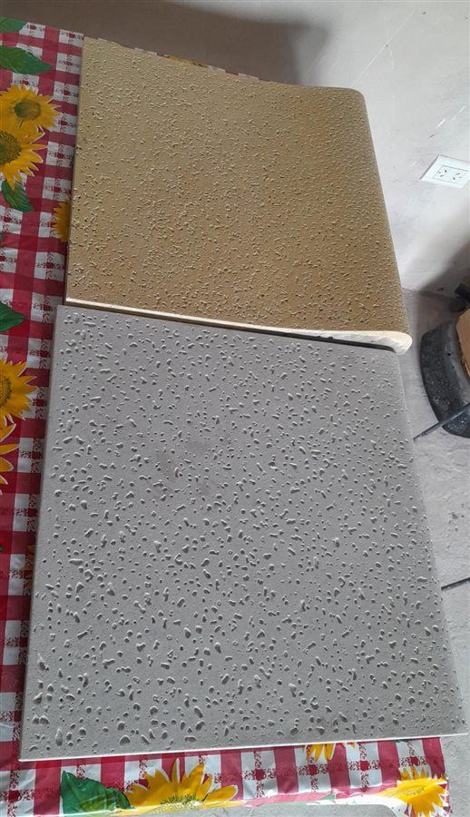
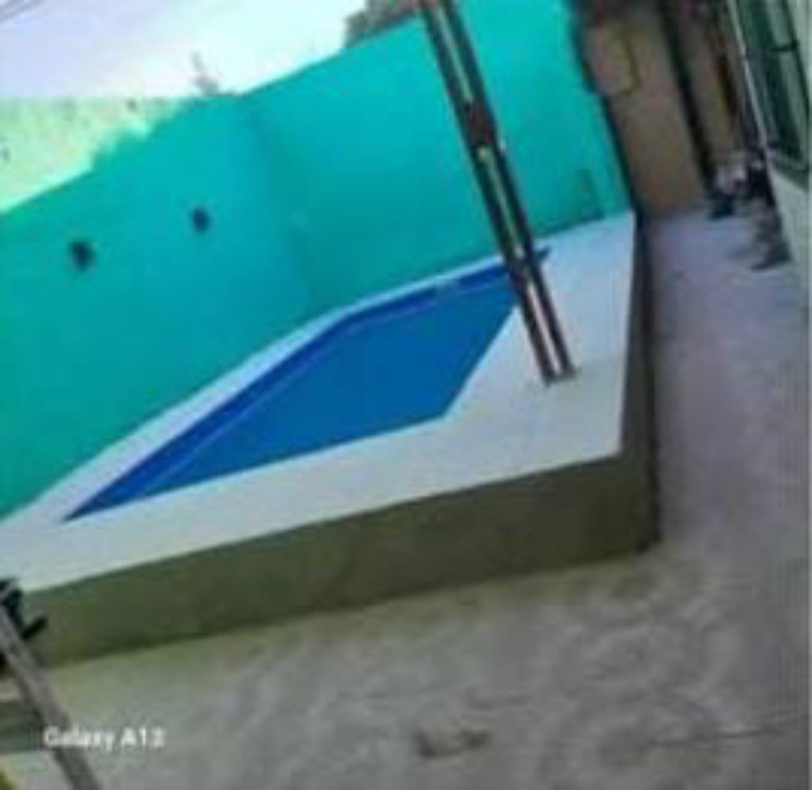

Borde Modelo Ballena
Diseño clásico con ondas en el extremo que actúan como cortagotas, evitando el retorno de agua.
Medida: 50x50 cmSeguridad, diseño y confort para tu piscina con baldosas antideslizantes de alta durabilidad.
Ver CatálogoNo levantan temperatura al sol, permitiendo caminar descalzo con total comodidad.
Textura porosa diseñada para evitar resbalones alrededor del espejo de agua.
Fabricados con materiales premoldeados de primera calidad, resistentes al exterior.
Diseño clásico con ondas en el extremo que actúan como cortagotas, evitando el retorno de agua.
Medida: 50x50 cm
Terminación recta con solapa descendente. Oculta las imperfecciones del borde de la piscina.
Medida: 50x50 cm
Baldosas planas ideales para la playa húmeda y la vereda perimetral. Disponibles en Marfil y Gris.
Medida: 50x50 cm
Asesoramiento técnico para colocación sobre obra y piscinas de fibra de vidrio o hormigón.
Servicio integralEnvianos los metros lineales de tu piscina y te calculamos la cantidad exacta de piezas.
Consultar por WhatsApp